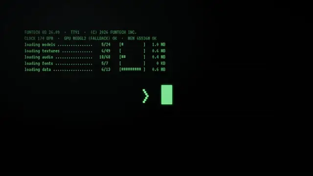
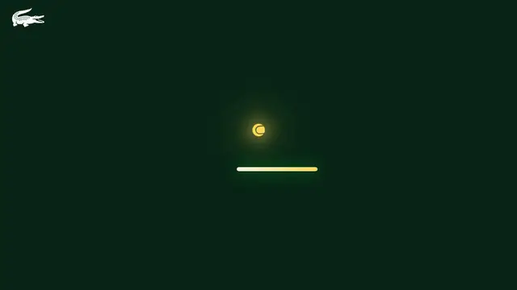
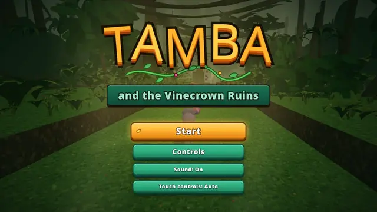
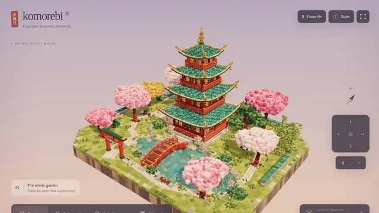
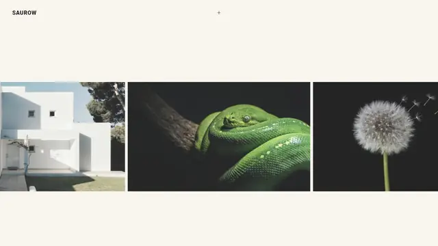
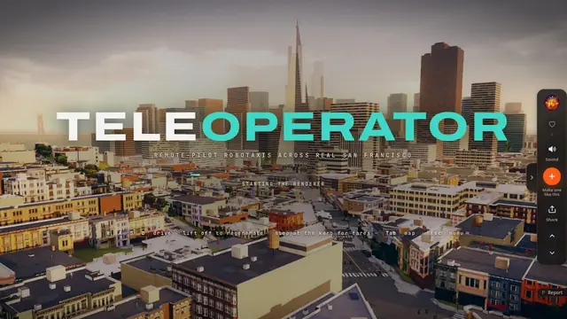
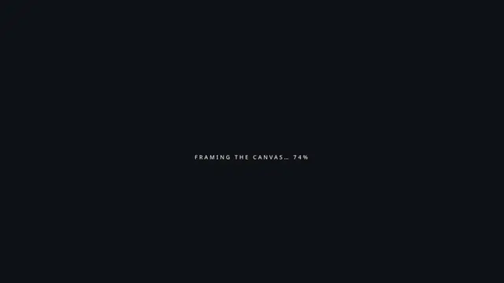

FunTech Experience
Funくん头槌砸穿复古 CRT 的沉浸品牌世界：全屏 3D、电影转场，视觉冲击今天最强。

打开网站 ↗它是什么：FunTech 的沉浸品牌站：橙色世界里 Funくん头槌砸穿复古 CRT，再一站站逛完他们的创意宇宙。
好在哪：今天 8 条里第一眼最响——全屏 3D、碎裂玻璃和分幕转场叠在一起，比普通作品集或单场景 demo 更有电影感。
怎么做到的：
- 主渲染走 Three.js r186 的 WebGPURenderer（包内 __THREE__=186；也留了少量 WebGLRenderer 痕迹）。
- Vite 把体验拆成 boot / shatter / museum / neon / volt 等站 chunk；模型用 GLTFLoader + DRACOLoader。
- 材质与后期偏 TSL/NodeMaterial；PMREM 环境光 + Bloom/toneMapping；没有 React/R3F，也没有 GSAP。
完整技术拆解
今日拆解 · FunTech Experience
- Live: https://experience2026.funtech.inc/
- Author / 出品: FunTech（公式キャラ「Funくん」）· X @tkm_hmng8
- Source: X · https://x.com/tkm_hmng8/status/2105593863469727926（约 1464 likes；社交侧提到 Opus 5.5——前端包内未出现该字样）
- Bundle: Vite 产物
assets/index-BSu4tWCh.js+ modulepreloadassets/post-DJ5SZDIO.js+assets/index-D2Znl6QN.css；canvas#gl - 证据：对本页 HTML + 主入口 /
post-*.js（含window.__THREE__=\186\`、签名// Three.js r186 - Node System、WebGPURenderer、GLTFLoader/DRACOLoader、PMREMGenerator、__vite__mapdeps` 分站 chunk）的抓取核对
为何选它
今天 8 条里第一眼最「响」的就是它：橙色世界里 Funくん头槌砸穿复古 CRT，玻璃碎裂、霓虹与站点分幕连成一整段可逛的品牌宇宙。X 上约一千四百赞、WebGPU 路径诚实，沉浸感和叙事完成度都压过单纯 demo；社交帖提到 Opus 5.5，但拆解只认包内证据，不把生成工具写进技术栈表。
实际在源码里找到的技术栈
post-DJ5SZDIO.js：window.__THREE__=\186\`；字符串签名 // Three.js r186 - Node System`WebGPURenderer 46 次；HTML 明确要求 WebGPU 或 WebGL2WebGLRenderer 3 次——保留兼容分支，主叙事仍是 WebGPUTSL 60；NodeMaterial 38；Fn( 17——材质与后期走节点图，不是老式手写 raw GLSL 为主type="module" + __vite__mapdeps 预加载 boot / shatter / museum / monument / neon / volt / breakout 等站 chunkGLTFLoader 25；setDRACOLoader / Draco 路径同在——站内模型走压缩 glTFPMREMGenerator 6；另有独立 pmrem-*.js chunkBloom 14；toneMapping 56——高光与曝光在后期链里调电影感use.typekit.net/pfl7wcw.css（elevon / proxima-nova，注释写明）createRoot / @react-three/fiber / useFrame；React 字面量极少，不足证明 React 应用壳gsap / GSAP核心效果怎么工作（源码 + 标明推测）
1. Three.js r186 + WebGPURenderer（确认）
版本钉在 __THREE__ = 186。渲染器以 WebGPURenderer 为主；页面文案要求 WebGPU 或 WebGL2。WebGLRenderer 仅少量出现，更像回退/共享代码，不是主视觉路径。
2. Vite 多「站」叙事壳（确认分片；站名语义 = 观感+文件名）
入口 index-*.js 用 __vite__mapdeps 按需拉 boot、shatter、museum、monument、bronze、neon、volt、breakout、logo 等 chunk——整站是分段体验，不是单场景 loop。CRT 碎裂对应 shatter / shards 一类分片（碎裂物理细节 = 观感推测；chunk 名与加载图已确认）。
3. TSL 节点材质 + 后期（确认类名）
r186 Node System + NodeMaterial / TSL / Fn( 说明材质与部分后期在节点图里编；Bloom 与大量 toneMapping 把高光压进品牌片的「响」和暗部层次。
4. glTF 场景资产（确认加载器）
GLTFLoader + DRACOLoader 负责站内网格；具体哪个站用哪只 glb 未全部硬编码扫完——资源清单如何路由 = 部分推测。
5. PMREM 环境（确认）
PMREMGenerator（及 pmrem-*.js）给金属/玻璃/霓虹更稳的 IBL，避免「塑料灰」。
6. UI 与无障碍壳（确认 DOM）
canvas#gl 作主画面；左上 ui-logo 回起点；HTML 含 WebGPU/WebGL2 提示与英日 data-en 文案。字体走 Adobe Fonts kit，不内嵌可变字体文件。
7. 伪代码（忠实于包内符号）
boot:
Vite module entry assets/index-*.js
preload post-*.js # Three.js r186 node/webgpu
canvas#gl
window.__THREE__ = "186"
renderer:
WebGPURenderer # primary (46 refs)
# WebGLRenderer traces (3) — fallback/shared, not the hero path
require WebGPU | WebGL2 # HTML copy
stations (code-split):
__vite__mapdeps → boot, shatter, museum, monument,
bronze, neon, volt, breakout, logo, …
assets:
GLTFLoader + DRACOLoader
PMREMGenerator
Bloom + toneMapping
Typekit pfl7wcw
not found:
React/R3F app shell, GSAP, "Opus 5.5" string in JS如果我来重做（学习向，非版本承诺）
- 先用 Three r186 + WebGPURenderer 搭一个
canvas全屏壳，HTML 写明 WebGPU/WebGL2 门槛。 - 把叙事拆成 Vite 动态 import 的站（开场 / 碎裂 / 展厅…），每站一个 chunk，避免首包过大。
- 模型走 GLB + Draco；环境用 PMREM；响亮高光靠 Bloom + toneMapping，而不是无脑提高曝光。
- 品牌字体与 UI 文案（含回起点 logo）和 3D 画布分开层，3D 挂了 UI 还能导航。






设计雷达 · 每天 8 个值得看的网站、App UI 和网页小游戏